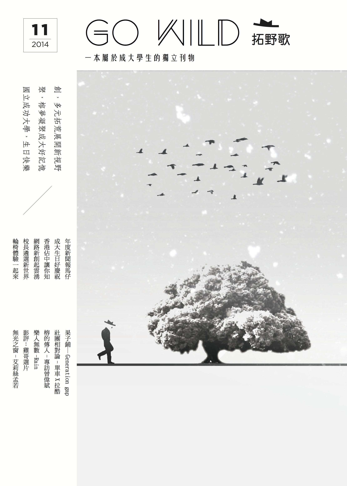

拓荒x源Origination.
在成大八十三歲的校慶慶祝活動，訂定本次活動核心價值為「創」與「聚」。以「創」來象徵成大的多元開創，分從學術高度、社團多元與學生自主為出發，舉辦各項活動；以「聚」來凝聚成大人的情感回憶，在台南這塊土地上，成大人與身邊的故事，聚起所有人與成大的認同感。
起源
本次校慶主題訂定為「拓荒」，前往未知領域開拓天下中間，我們所遇到的困難或低潮，可譬喻成大人在生活中，總是會有的高牆與低谷，即便環境艱辛或行進困難，但我們會依然堅持奮力前進的的勇氣。而本次活動宗旨核心「創」與「聚」，也可代表在創新走向新方向的過程，擬將會找到一群與你志同道合的好夥伴。
《拓野歌》
關於《GoWild拓野歌》，一本屬於成大學生的原創刊物。在宣揚獨立性中，更保有生活中的獨特。我們來自成大，自然想要活得漂亮，但每一個人，都活得不一樣。而《GoWild拓野歌》除了紀錄寫實外，更要有自己的思想與意識。我們排斥人云亦云的隨波逐流，而是在與眾不同中樹立屬於成大人的思維與主見，我們可以嘲諷主流文化，可以對於當今社會義憤填膺，更可以締造屬於成大的一種時尚趨勢，並藉由不同的成大人，轉換生活的視角，分享不一樣的日子與故事。
《GoWild拓野歌》行之有年，不同時代的成大人，跨越時空的影響著我們，承先啓後的傳遞成大精神。但復刻青春的筆跡，在我們的眼裡，永遠是個文藝年少。因為有成大，有你們，才有《GoWild拓野歌》將這本雜誌獻給成大生活的人們。
